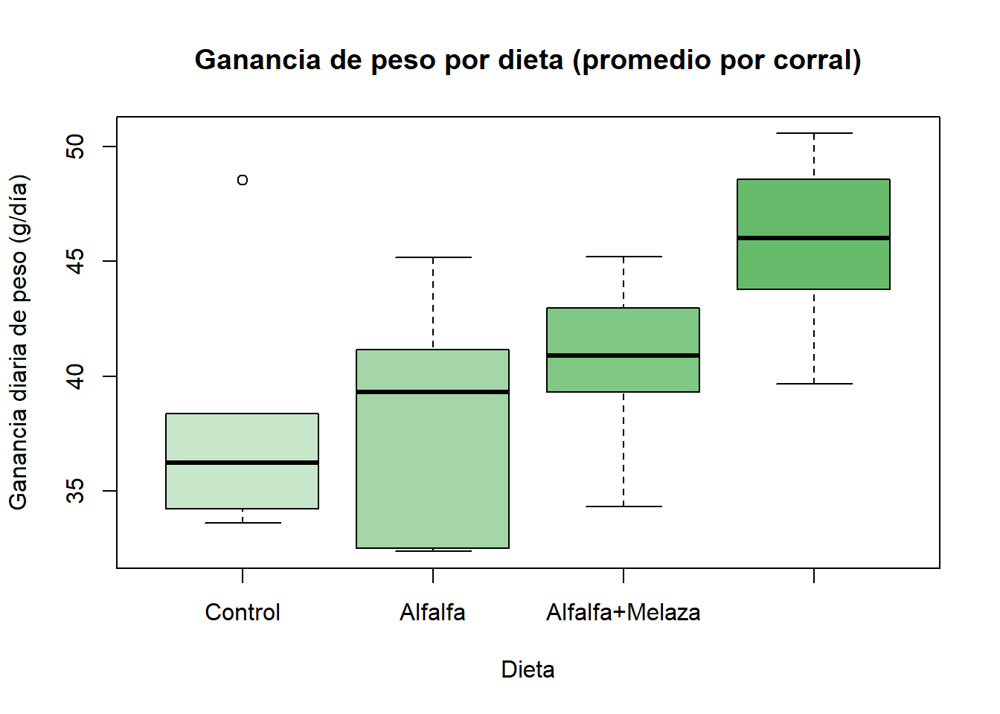

Ver código
library(car)
library(nortest)Taller de diseño experimental para Agronomía y Zootecnia
Esta página abre el taller. Muestra el diseño más simple: el diseño completamente aleatorizado (DCA).
El taller tiene tres páginas. Use la barra superior para moverse entre ellas.
| Página | Diseño | Control local |
|---|---|---|
| DCA (esta página) | Completamente aleatorizado | Ninguno |
| DBCA | En bloques completos al azar | Un gradiente |
| DCL | Cuadro latino | Dos gradientes |
Cada bloque de código está plegado. Haga clic en Ver código para abrirlo. Use el menú </> Código (arriba a la derecha) para abrir todos los bloques a la vez.
Cada experimento de esta página es simulado. Los datos no son reales. Se fijó una semilla para que usted obtenga los mismos resultados.
Una granja cunícola quiere comparar cuatro dietas para conejos de engorde. La granja tiene un galpón con 24 corrales. Los corrales son parecidos: misma luz, misma ventilación, mismo piso.
Cada corral recibe una sola dieta. Cada corral aloja 5 conejos.
| Elemento | En este experimento |
|---|---|
| Objetivo | Comparar la ganancia diaria de peso entre cuatro dietas. |
| Población | Conejos de engorde de la granja, de la misma línea genética y edad. |
| Factor | Dieta (cuatro niveles). |
| Tratamientos | Control, Alfalfa, Alfalfa+Melaza, Pasto+Concentrado. |
| Unidad experimental | El corral. Es la unidad a la que se asigna la dieta. |
| Unidad observacional | El conejo. Se pesa cada conejo. |
| Variable respuesta | Ganancia diaria de peso del corral (g/día). |
| Réplicas | 6 corrales por dieta. |
Los 5 conejos de un corral comparten la misma dieta y el mismo ambiente. Son submuestras. La réplica verdadera es el corral. La sección 4 muestra qué pasa si se ignora esta regla.
\[ y_{ij} = \mu + \tau_i + \varepsilon_{ij}, \qquad i = 1,\dots,4; \quad j = 1,\dots,6 \]
con \(\varepsilon_{ij} \overset{iid}{\sim} N(0, \sigma^2)\) y \(\sum_i \tau_i = 0\).
Cada término tiene una razón de estar en el modelo.
| Término | Significado | Por qué es una fuente de variación |
|---|---|---|
| \(y_{ij}\) | Ganancia diaria de peso del corral \(j\) con la dieta \(i\) | Es lo que se mide. |
| \(\mu\) | Media general | Es el punto de referencia común. |
| \(\tau_i\) | Efecto de la dieta \(i\) | Fuente controlada. El investigador eligió las dietas. El efecto es fijo. |
| \(\varepsilon_{ij}\) | Error experimental del corral \(j\) | Fuente no controlada. Reúne todo lo que diferencia un corral de otro: la camada, el comportamiento, pequeñas diferencias de ambiente. |
El DCA tiene una sola fuente de variación conocida: el tratamiento. Todo lo demás se agrupa en el error.
Las hipótesis son:
\[ H_0: \tau_1 = \tau_2 = \tau_3 = \tau_4 = 0 \qquad \text{vs.} \qquad H_1: \text{al menos un } \tau_i \neq 0 \]
Los grados de libertad son:
| Fuente | GL | Valor aquí |
|---|---|---|
| Dieta | \(t-1\) | 3 |
| Error | \(t(r-1)\) | 20 |
| Total | \(tr-1\) | 23 |
La aleatorización asigna las dietas a los corrales por sorteo. Esto elimina el sesgo del investigador.
El código sortea las dietas, genera el efecto de cada corral y simula el peso de cada conejo.
set.seed(34)
dietas <- c("Control", "Alfalfa", "Alfalfa+Melaza", "Pasto+Concentrado")
r <- 6 # corrales por dieta
n_conejos <- 5 # conejos por corral
efecto_dieta <- c(0, 2.5, 4, 5.5) # g/día respecto al control
# Aleatorización: 24 corrales, 6 por dieta
corrales <- data.frame(
corral = 1:24,
dieta = factor(sample(rep(dietas, each = r)), levels = dietas)
)
# Error experimental: cada corral tiene su propio efecto
corrales$u_corral <- rnorm(24, mean = 0, sd = 3.5)
# Unidades observacionales: 5 conejos por corral
conejos <- corrales[rep(1:24, each = n_conejos), ]
conejos$gdp <- 38 +
efecto_dieta[as.integer(conejos$dieta)] +
conejos$u_corral +
rnorm(nrow(conejos), mean = 0, sd = 4) # error de muestreo
# Dato analizado: promedio por corral (la unidad experimental)
datos_dca <- aggregate(gdp ~ corral + dieta, data = conejos, FUN = mean)
head(datos_dca, 8) corral dieta gdp
1 1 Control 33.63398
2 6 Control 48.52661
3 11 Control 34.23864
4 17 Control 35.48432
5 20 Control 38.36404
6 24 Control 37.02760
7 2 Alfalfa 41.16205
8 3 Alfalfa 32.51251
Analice el promedio del corral. El corral es la unidad experimental.
Df Sum Sq Mean Sq F value Pr(>F)
dieta 3 236.5 78.85 3.656 0.03 *
Residuals 20 431.3 21.57
---
Signif. codes: 0 '***' 0.001 '**' 0.01 '*' 0.05 '.' 0.1 ' ' 1Ahora ignore el corral. Trate cada conejo como una réplica independiente.
Df Sum Sq Mean Sq F value Pr(>F)
dieta 3 1183 394.2 11.99 6.82e-07 ***
Residuals 116 3815 32.9
---
Signif. codes: 0 '***' 0.001 '**' 0.01 '*' 0.05 '.' 0.1 ' ' 1Compare las dos tablas.
El análisis con conejos finge tener 120 réplicas. Solo hay 24. Declara diferencias con más seguridad de la que los datos permiten.
El ANOVA exige tres cosas sobre los residuales: normalidad, varianza constante e independencia.
La independencia se garantiza con la aleatorización. Las otras dos se prueban.
Primero cargue las funciones compartidas del taller. Este bloque ejecuta el archivo funciones.R.
# Funciones compartidas por las tres páginas del taller.
# Requiere los paquetes: car, nortest
# ---- Diagnóstico de supuestos --------------------------------------------
# Recibe un modelo lm/aov y el factor de tratamiento.
# Devuelve dos tablas: pruebas de normalidad (residuales) y prueba de Levene.
diagnostico <- function(modelo, tratamiento) {
r <- residuals(modelo)
sw <- shapiro.test(r)
ad <- nortest::ad.test(r)
li <- nortest::lillie.test(r)
normalidad <- data.frame(
prueba = c("Shapiro-Wilk", "Anderson-Darling", "Lilliefors (K-S)"),
estadistico = unname(round(c(sw$statistic, ad$statistic, li$statistic), 4)),
valor_p = signif(c(sw$p.value, ad$p.value, li$p.value), 3),
decision = ifelse(c(sw$p.value, ad$p.value, li$p.value) < 0.05,
"Rechaza normalidad", "No rechaza normalidad")
)
lev <- car::leveneTest(r ~ tratamiento, center = median)
levene <- data.frame(
prueba = "Levene (centro: mediana)",
estadistico = round(lev$`F value`[1], 4),
gl = paste(lev$Df[1], lev$Df[2], sep = " y "),
valor_p = signif(lev$`Pr(>F)`[1], 3),
decision = ifelse(lev$`Pr(>F)`[1] < 0.05,
"Rechaza homocedasticidad", "No rechaza homocedasticidad")
)
list(normalidad = normalidad, levene = levene)
}
# ---- Gráficos de diagnóstico ---------------------------------------------
graficos_diagnostico <- function(modelo) {
op <- par(mfrow = c(1, 2), mar = c(4.5, 4.5, 3, 1))
on.exit(par(op))
r <- residuals(modelo)
qqnorm(r, main = "Q-Q de los residuales", pch = 19, col = "#2e7d32",
xlab = "Cuantiles teóricos", ylab = "Cuantiles de los residuales")
qqline(r, lwd = 2)
plot(fitted(modelo), r, pch = 19, col = "#2e7d32",
main = "Residuales vs. ajustados",
xlab = "Valores ajustados", ylab = "Residuales")
abline(h = 0, lty = 2)
}Se usan tres pruebas. Las tres tienen la misma hipótesis nula: los residuales son normales.
La hipótesis nula es: la varianza es igual en todas las dietas.
Un valor p mayor que 0,05 no rechaza el supuesto. No prueba que el supuesto sea cierto. Solo indica que los datos no lo contradicen. Con pocas réplicas, las pruebas tienen poca potencia. Mire siempre los gráficos.
| Ventajas | Desventajas | |
|---|---|---|
| Diseño | Es el más simple de planear y de analizar. | No controla ninguna fuente de variación del terreno o del lote. |
| Flexibilidad | Admite cualquier número de tratamientos y de réplicas. | Exige unidades experimentales homogéneas. |
| Datos perdidos | Una parcela o un corral perdido no rompe el análisis. | — |
| Grados de libertad | Da el máximo de GL para el error. | Si hay un gradiente oculto, este infla el error. |
| Precisión | Es suficiente cuando el ambiente es uniforme. | Pierde potencia frente al DBCA cuando hay heterogeneidad. |
Regla práctica. Use el DCA si las unidades se parecen entre sí. Si no se parecen, agrúpelas en bloques. La siguiente página muestra cómo.
Continúe con DBCA. Allí aparece un gradiente de pendiente y una respuesta en forma de proporción.
---
title: "DCA · Diseño completamente aleatorizado"
subtitle: "Taller de diseño experimental para Agronomía y Zootecnia"
---
## Antes de empezar
Esta página abre el taller. Muestra el diseño más simple: el **diseño completamente aleatorizado (DCA)**.
El taller tiene tres páginas. Use la barra superior para moverse entre ellas.
| Página | Diseño | Control local |
|---|---|---|
| **DCA** (esta página) | Completamente aleatorizado | Ninguno |
| **DBCA** | En bloques completos al azar | Un gradiente |
| **DCL** | Cuadro latino | Dos gradientes |
::: {.callout-tip}
## Cómo usar el código
Cada bloque de código está plegado. Haga clic en **Ver código** para abrirlo. Use el menú `</> Código` (arriba a la derecha) para abrir todos los bloques a la vez.
:::
Cada experimento de esta página es **simulado**. Los datos no son reales. Se fijó una semilla para que usted obtenga los mismos resultados.
```{r}
#| label: paquetes
library(car)
library(nortest)
```
---
## 1. El experimento
### Contexto
Una granja cunícola quiere comparar **cuatro dietas** para conejos de engorde. La granja tiene un galpón con 24 corrales. Los corrales son parecidos: misma luz, misma ventilación, mismo piso.
Cada corral recibe una sola dieta. Cada corral aloja 5 conejos.
### Descripción completa
| Elemento | En este experimento |
|---|---|
| **Objetivo** | Comparar la ganancia diaria de peso entre cuatro dietas. |
| **Población** | Conejos de engorde de la granja, de la misma línea genética y edad. |
| **Factor** | Dieta (cuatro niveles). |
| **Tratamientos** | Control, Alfalfa, Alfalfa+Melaza, Pasto+Concentrado. |
| **Unidad experimental** | El **corral**. Es la unidad a la que se asigna la dieta. |
| **Unidad observacional** | El **conejo**. Se pesa cada conejo. |
| **Variable respuesta** | Ganancia diaria de peso del corral (g/día). |
| **Réplicas** | 6 corrales por dieta. |
::: {.callout-important}
## Medir más no es replicar
Los 5 conejos de un corral comparten la misma dieta y el mismo ambiente. Son **submuestras**. La réplica verdadera es el corral. La sección 4 muestra qué pasa si se ignora esta regla.
:::
---
## 2. El modelo
$$
y_{ij} = \mu + \tau_i + \varepsilon_{ij}, \qquad i = 1,\dots,4; \quad j = 1,\dots,6
$$
con $\varepsilon_{ij} \overset{iid}{\sim} N(0, \sigma^2)$ y $\sum_i \tau_i = 0$.
Cada término tiene una razón de estar en el modelo.
| Término | Significado | Por qué es una fuente de variación |
|---|---|---|
| $y_{ij}$ | Ganancia diaria de peso del corral $j$ con la dieta $i$ | Es lo que se mide. |
| $\mu$ | Media general | Es el punto de referencia común. |
| $\tau_i$ | Efecto de la dieta $i$ | **Fuente controlada.** El investigador eligió las dietas. El efecto es **fijo**. |
| $\varepsilon_{ij}$ | Error experimental del corral $j$ | **Fuente no controlada.** Reúne todo lo que diferencia un corral de otro: la camada, el comportamiento, pequeñas diferencias de ambiente. |
El DCA tiene **una sola fuente de variación conocida**: el tratamiento. Todo lo demás se agrupa en el error.
Las hipótesis son:
$$
H_0: \tau_1 = \tau_2 = \tau_3 = \tau_4 = 0 \qquad \text{vs.} \qquad H_1: \text{al menos un } \tau_i \neq 0
$$
Los grados de libertad son:
| Fuente | GL | Valor aquí |
|---|---|---|
| Dieta | $t-1$ | 3 |
| Error | $t(r-1)$ | 20 |
| Total | $tr-1$ | 23 |
---
## 3. Aleatorización y simulación
La aleatorización asigna las dietas a los corrales por sorteo. Esto elimina el sesgo del investigador.
El código sortea las dietas, genera el efecto de cada corral y simula el peso de cada conejo.
```{r}
#| label: simulacion-dca
set.seed(34)
dietas <- c("Control", "Alfalfa", "Alfalfa+Melaza", "Pasto+Concentrado")
r <- 6 # corrales por dieta
n_conejos <- 5 # conejos por corral
efecto_dieta <- c(0, 2.5, 4, 5.5) # g/día respecto al control
# Aleatorización: 24 corrales, 6 por dieta
corrales <- data.frame(
corral = 1:24,
dieta = factor(sample(rep(dietas, each = r)), levels = dietas)
)
# Error experimental: cada corral tiene su propio efecto
corrales$u_corral <- rnorm(24, mean = 0, sd = 3.5)
# Unidades observacionales: 5 conejos por corral
conejos <- corrales[rep(1:24, each = n_conejos), ]
conejos$gdp <- 38 +
efecto_dieta[as.integer(conejos$dieta)] +
conejos$u_corral +
rnorm(nrow(conejos), mean = 0, sd = 4) # error de muestreo
# Dato analizado: promedio por corral (la unidad experimental)
datos_dca <- aggregate(gdp ~ corral + dieta, data = conejos, FUN = mean)
head(datos_dca, 8)
```
```{r}
#| label: boxplot-dca
boxplot(gdp ~ dieta, data = datos_dca,
col = c("#c8e6c9", "#a5d6a7", "#81c784", "#66bb6a"),
ylab = "Ganancia diaria de peso (g/día)", xlab = "Dieta",
main = "Ganancia de peso por dieta (promedio por corral)")
```
---
## 4. Análisis de varianza
Analice **el promedio del corral**. El corral es la unidad experimental.
```{r}
#| label: anova-dca
m_dca <- aov(gdp ~ dieta, data = datos_dca)
summary(m_dca)
```
### Qué pasa con la pseudorreplicación
Ahora ignore el corral. Trate cada conejo como una réplica independiente.
```{r}
#| label: pseudorreplicacion
summary(aov(gdp ~ dieta, data = conejos))
```
Compare las dos tablas.
- El error pasa de **20** a **116** grados de libertad.
- El cuadrado medio del error cambia.
- El valor p se vuelve mucho más pequeño.
El análisis con conejos finge tener 120 réplicas. Solo hay 24. Declara diferencias con más seguridad de la que los datos permiten.
---
## 5. Diagnóstico de supuestos
El ANOVA exige tres cosas sobre los residuales: normalidad, varianza constante e independencia.
La independencia se garantiza con la aleatorización. Las otras dos se prueban.
Primero cargue las funciones compartidas del taller. Este bloque ejecuta el archivo `funciones.R`.
```{r}
#| label: funciones
#| file: funciones.R
```
### Normalidad de los residuales
Se usan tres pruebas. Las tres tienen la misma hipótesis nula: *los residuales son normales*.
```{r}
#| label: normalidad-dca
d_dca <- diagnostico(m_dca, datos_dca$dieta)
d_dca$normalidad
```
### Homocedasticidad: prueba de Levene
La hipótesis nula es: *la varianza es igual en todas las dietas*.
```{r}
#| label: levene-dca
d_dca$levene
```
### Gráficos
```{r}
#| label: graficos-dca
#| fig-height: 4
graficos_diagnostico(m_dca)
```
::: {.callout-note}
## Lectura de resultados
Un valor p mayor que 0,05 **no rechaza** el supuesto. No prueba que el supuesto sea cierto. Solo indica que los datos no lo contradicen. Con pocas réplicas, las pruebas tienen poca potencia. Mire siempre los gráficos.
:::
---
## 6. Ventajas y desventajas del DCA
| | Ventajas | Desventajas |
|---|---|---|
| **Diseño** | Es el más simple de planear y de analizar. | No controla ninguna fuente de variación del terreno o del lote. |
| **Flexibilidad** | Admite cualquier número de tratamientos y de réplicas. | Exige unidades experimentales **homogéneas**. |
| **Datos perdidos** | Una parcela o un corral perdido no rompe el análisis. | — |
| **Grados de libertad** | Da el máximo de GL para el error. | Si hay un gradiente oculto, este infla el error. |
| **Precisión** | Es suficiente cuando el ambiente es uniforme. | Pierde potencia frente al DBCA cuando hay heterogeneidad. |
**Regla práctica.** Use el DCA si las unidades se parecen entre sí. Si no se parecen, agrúpelas en bloques. La siguiente página muestra cómo.
---
::: {.callout-tip}
## Siguiente paso
Continúe con **DBCA**. Allí aparece un gradiente de pendiente y una respuesta en forma de proporción.
:::